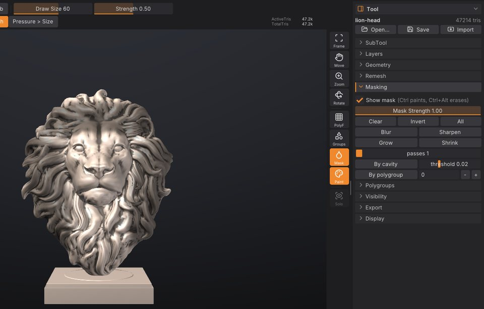

Masking
A mask protects part of the model from change. Masked areas are drawn darker, and every brush, the Paint brush and colour fills leave them alone. This chapter covers painting masks with Ctrl, masking with a lasso or rectangle, the background gestures, and the Tool > Masking controls for inverting, blurring, growing and building masks from cavities or polygroups.


How masks work#
- A mask is a value per vertex from 0 (free) to 1 (fully masked). Values in between give partial protection, so a soft mask edge blends sculpting into the protected area.
- Masks belong to a SubTool: each SubTool has its own mask.
-
Masks are saved in projects (
.sfproj) and in.GoZfiles, so they survive a round trip to ZBrush. - Masking is not a layer and isn't affected by sculpt layers: a mask stroke always works on the model itself.
- Mask strokes and mask commands are undoable like any other change.
To see the mask, keep Mask on in the right shelf (it is on by default). The same toggle is Show mask in Tool > Masking, and Show Mask in the Render palette. Turning it off hides the darkening; the mask still protects the surface.
Paint a mask#
- Hold Ctrl and drag on the model. The area under the brush becomes masked.
- Hold Ctrl+Alt and drag to erase the mask.
Mask strokes use the current Draw Size, symmetry and, with a pen, pressure (when Pressure > Strength is on). How much each stroke masks is set by Mask Strength in Tool > Masking (0.01 to 1, default 1): lower values build up a soft, partial mask over several strokes. Mask strokes always use a round tip, whatever alpha you have selected, and a DragRect stroke masks with dabs along the path instead of one stamp.
On macOS, Cmd works wherever this guide says Ctrl.
Mask with a lasso or rectangle#
To mask a large or sharply outlined area in one go, pick a mask selection shape. As in ZBrush, holding Ctrl turns the brush on the left shelf into the mask brush: with Ctrl held, click the brush tile (or press B) to pick MaskPen, MaskLasso or MaskRect, or click the stroke tile to pick the stroke (Dots, Lasso or Rect). The same shapes sit at the top of Tool > Masking:
| Shape | Ctrl + drag |
|---|---|
| MaskPen (default) | Paints the mask with the brush, as described above. |
| MaskLasso | Draws a free-hand outline that closes back to where you started. Everything inside is masked. |
| MaskRect | Draws a rectangle. Everything inside is masked. |
With MaskLasso or MaskRect:
- Hold Ctrl and drag around the area. The drag can start on the model or on the background. The shape is drawn as you drag, white with a dark veil.
- Let go to mask what's inside. Hold Ctrl+Alt instead to unmask what's inside (the shape is drawn blue). You can press or release Alt while dragging; what counts is whether it is held when you let go.
The selection works in screen space, like the visibility rectangle: a vertex counts as inside when it falls inside the shape as you see it, including vertices on the far side of the model. Hidden parts are left alone. Mask Strength sets how much a selection masks or unmasks, and each selection is one undo step. A lasso that crosses itself leaves out the areas it encloses twice.
The cursor turns into a small cross while Ctrl is held, since the brush size doesn't matter for a selection.
Background gestures#
With Ctrl held, clicks and drags on the empty background act on the whole mask:
| Gesture | Effect |
|---|---|
| Ctrl + click the background | Invert the mask |
| Ctrl + drag on the background | Clear the mask (MaskPen) |
| Ctrl + drag on the background, with nothing masked | Nothing, as in ZBrush (the SculptForge input style zooms the view, see Coming from ZBrush) |
On the model, a Ctrl + click that doesn't drag works on the mask's edges, as in ZBrush:
| Gesture | Effect |
|---|---|
| Ctrl + click the model | Blur the mask (once per click; same as Blur) |
| Ctrl+Alt + click the model | Sharpen the mask (same as Sharpen) |
Mask keys#
| Key | Effect |
|---|---|
| Ctrl+A | Mask All |
| Ctrl+Shift+A | Clear Mask |
| Ctrl+I | Invert Mask |
| Ctrl+H | Show or hide the mask's shading (View Mask) |
| Ctrl+W | Group Masked: the masked part becomes a new polygroup and the mask is cleared (see Polygroups) |
A drag starts after the cursor moves a few pixels, so a slightly shaky click still inverts. With MaskLasso or MaskRect, a Ctrl + drag on the background draws the shape instead; clear the mask with Clear, or Ctrl+Alt + drag a shape around the whole model.
The Masking sub-palette#
Open Tool > Masking (the Tool palette is in the right tray by default). Every button is one undo step.
| Control | What it does | Command |
|---|---|---|
| Show mask | Darken masked areas in the viewport. | |
| MaskPen / MaskLasso / MaskRect | What Ctrl + drag does: paint with the brush, or mask inside a lasso or rectangle. | mask_lasso / mask_rect |
| Mask Strength | How much each mask stroke or selection masks (0.01 to 1), and the mask value By cavity gives the deepest cavities. | |
| Clear | Unmask everything. | mask_clear |
| Invert | Masked becomes free and free becomes masked. | mask_invert |
| All | Mask every visible vertex. | mask_all |
| Blur | Soften the mask edges by averaging with neighbouring vertices. | mask_blur |
| Sharpen | Tighten soft edges, pushing values toward fully masked or free. | mask_sharpen |
| Grow | Expand the masked region by one ring of edges per pass. | mask_grow |
| Shrink | Contract the masked region by one ring of edges per pass. | mask_shrink |
| passes | How many times Blur, Sharpen, Grow and Shrink run (1 to 20 here, default 1). | iterations= |
| By cavity | Mask concave areas (creases, folds, pores), replacing the current mask. | mask_by_cavity |
| threshold | How concave a spot must be for By cavity (-0.2 to 0.5, default 0.02). 0 masks anything concave; higher values keep only deep creases. | threshold= |
| By polygroup | Mask one polygroup, replacing the current mask. The number field next to it is the polygroup id. | mask_by_polygroup |
Mask operations only change visible parts of the model; hidden parts keep their mask. Clear is the exception and frees everything.
Common tasks#
Protect detail while smoothing#
- Click By cavity to mask the creases and pores.
- Smooth with Shift. The cavities keep their sharpness while the surface between them relaxes.
- Ctrl + drag on the background to clear the mask when you're done.
Raise threshold if too much is masked; lower Mask Strength for partial protection.
Sculpt one part only#
- Paint a mask over the part you want to work on with Ctrl.
- Ctrl + click the background to invert it. Now everything except that part is protected.
- Sculpt freely; strokes that cross the edge stop at the mask.
Mask a whole polygroup#
The quickest way works without knowing the group's number:
- Ctrl+Shift + click the group to isolate it (see Polygroups and visibility).
- Click All: only visible vertices are masked.
- Ctrl+Shift + click the background to show everything again. The mask stays.
By polygroup masks a group by its id. The viewport doesn't show ids, but the console does: isolate the group, then open the console (`) and read the isolate_polygroup group=N line. Enter that number in the field next to By polygroup and click it.
A soft-edged mask#
Paint the mask, then click Blur a few times (or set passes to 3-5 first). Sharpen does the opposite.
Turn a mask into a polygroup#
Click From mask in Tool > Polygroups: the masked triangles become a new polygroup. See Polygroups and visibility.
Masks and painting#
Polypaint respects the mask too: the Paint brush, Rgb strokes and Fill leave masked areas alone, so you can mask an area and fill the rest with a colour. See Polypaint and materials.
Masking from a script#
| Command | Options |
|---|---|
mask_clear, mask_all, mask_invert | |
mask_blur, mask_sharpen, mask_grow, mask_shrink | iterations (1-100, default 1) |
mask_by_cavity | strength (0-1, default 1), threshold (-1 to 1, default 0.02) |
mask_by_polygroup | group (required), add=true to add to the current mask instead of replacing it |
mask_rect | x0 y0 x1 y1 (-1 to 1, y up), unmask, strength (0-1, default 1), optional view_proj matrix; without a view the rectangle spans the mesh seen from the front |
mask_lasso | points (required): the outline as "x0 y0 x1 y1 ...", at least 3 points in the same -1 to 1 space; unmask, strength, view_proj as for mask_rect |
sculptforge-cli -c 'open path=head.obj; mask_by_cavity threshold=0.05; mask_blur iterations=2; save_project path=head.sfproj'See also#
- Polygroups and visibility: groups, isolating and hiding parts
- Sculpting and brushes: modifier keys and brush settings
- Polypaint and materials: fills that respect the mask